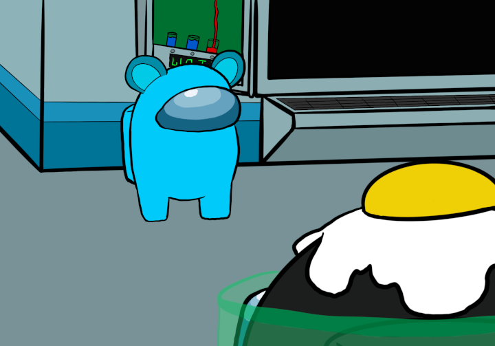

Ally made in the Medbay
You decide to go into the Medbay, hoping that Blue is not an imposter. While you were scanning yourself, you catch a glimpse of what Blue is doing and to your surpise, Blue is actually doing a task! They turn around to see you finishing your scan, so now you can confirm each other as innocent. It seems like Blue also has to scan themselves, so you decide to head to the reactor room next. Go go, vamonos!